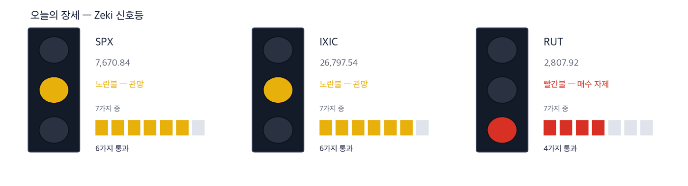

다우 50,906 -0.86% | 나스닥 종합 26,861 +0.24% | S&P 500 7,652 -0.25% | 러셀 2000 2,797 -0.39% | 10년 국채 5.29% +0.04%p | 제키 신호등 노란불 |

초록불은 매수 우위, 노란불은 관망, 빨간불은 매수 자제입니다. 칸은 7가지 조건 중 몇 가지를 만족하는지이고, 많을수록 오르는 종목이 넓게 퍼져 있습니다. 9월 30일 종가로 계산한 신호등입니다. S&P 500과 나스닥 종합은 6가지를 만족해 노란불, 러셀 2000은 4가지로 빨간불입니다. 세 지수를 합한 신호등은 노란불입니다.
관망 — 신호등이 뜻하는 자세입니다.
9월 30일 뉴욕에서 S&P 500은 0.25% 내려 7,651.54로 마쳤습니다. 나스닥 종합은 0.24% 올랐고, 다우는 0.86%, 러셀 2000은 0.39% 내렸습니다. 미국 10년물 국채 금리는 장중 5.31%까지 올라 2002년 이후 가장 높았습니다. 알파벳·애플·아마존·마이크로소프트는 1%가량 올랐습니다. (월스트리트저널·IBD)
3분기 전체로 보면 S&P 500은 2%, 나스닥 종합은 2.5% 올랐고 다우는 2.7% 내렸습니다. 두 지수는 4년 연속 두 자릿수 상승을 향하고 있습니다. 1990년대 후반 이후 처음입니다. 그 흐름을 막을 수 있는 것이 금리라는 것이 오늘의 쟁점입니다. (월스트리트저널)
① 마이크론 실적이 기대를 넘었습니다. 메모리주는 개장 반응을 보고 다루십시오. 매출과 이익이 모두 회계연도 4분기 예상을 웃돌았고 다음 분기 전망도 올렸습니다. 다만 시장은 이미 큰 폭의 호실적을 기대했습니다. 주가는 30일 1,065.11달러로 제자리였고, 시간외에서 조금 올랐습니다. (IBD, 동부 9월 30일 23:04)
② 금리가 오늘의 가장 큰 변수입니다. 2분기 성장률이 1.5%에서 2.2%로 상향 수정됐습니다. 8월 개인소비지출 물가는 1년 전보다 3.4% 올랐습니다. 경기가 식지 않았다는 숫자라 금리 인상 걱정이 남습니다. 다만 10월 금리 인상 확률은 하루 전 50.9%에서 37%로 내려왔습니다. (월스트리트저널·IBD)
③ 디젤값이 사상 최고입니다. 정유주는 수출 금지 위협을 함께 보십시오. 미국 정유 공장은 97% 가까이 돌고 있습니다. 중간선거를 5주 앞두고 트럼프 대통령은 디젤 수출 금지를 거론했습니다. 금지되면 정제 마진이 무너질 수 있습니다. (월스트리트저널)
숫자 하나 — 미국 10년물 국채 금리 5.29%입니다. 3분기에만 0.87%포인트 올랐습니다. (IBD) 월스트리트저널은 이유로 3가지를 들었습니다. 늘어나는 정부 부채, 성장을 끌어올리는 인공지능 투자, 물가를 밀어 올리는 무역 장벽입니다. 쉽게 사라지지 않는 요인이라는 진단입니다.
| 날짜 | 무엇을 보는가 | 시장에 어떤 영향 |
|---|---|---|
| 10월 1일(목) | 마이크론 실적 뒤 첫 거래 | 메모리주와 인공지능 칩주의 방향을 정합니다 |
| 10월 1일(목) | 9월 제조업 지수 | 경기가 강하다는 숫자가 나오면 금리가 더 오를 수 있습니다 |
| 10월 2일(금) | 9월 고용 보고서 | 이번 주 가장 큰 발표입니다. 금리·달러·주식이 함께 움직입니다 |
2분기 성장률을 끌어올린 것은 소비와 투자였습니다. 월스트리트저널은 투자 항목이 늘어난 데서 인공지능 설비 투자가 성장에 얼마나 중요한지 드러났다고 짚었습니다. 그 투자가 실제 주문으로 나온 것이 30일 휴렛팩커드 엔터프라이즈입니다.
클라우드 업체 벌터가 AMD의 새 랙 시스템 헬리오스를 쓴 휴렛팩커드 엔터프라이즈 장비를 대량 주문했습니다. 회사는 네트워크 매출 전망도 올렸습니다. (IBD) 같은 날 로지텍 최고경영자는 인공지능 수요로 칩이 모자라 세계를 돌며 물량을 구한다고 밝혔습니다. (월스트리트저널)
| 종가 | 당일 | 한 주 | 20거래일 |
|---|---|---|---|
| 63.89달러 | +3.90% | +2.50% | +25.59% |
| 3개월 | 제키 강도 | 제키 자금 | 고점 대비 |
|---|---|---|---|
| +45.37% | 96 | A | -4.8% |
| 누가 | 휴렛팩커드 엔터프라이즈, 서버와 네트워크 장비를 만드는 회사입니다. |
| 무엇을 | 30일 3.90% 올라 63.89달러에 마쳤습니다. 벌터에게서 AMD 랙 서버 대량 주문을 받았습니다. |
| 언제 | 9월 30일 수요일입니다. |
| 어디서 | 뉴욕증권거래소 상장 종목입니다. |
| 왜 | 인공지능 투자가 성장률을 끌어올릴 만큼 서버 수요가 크기 때문입니다. |
| 어떻게 | 거래량이 50일 평균의 1.61배로 늘었습니다. 장중 1년 최고가 67.10달러를 찍은 뒤 밀려 마쳤습니다. |
| 종가 | 당일 | 한 주 | 20거래일 |
|---|---|---|---|
| 611.76달러 | +0.69% | -0.46% | +33.10% |
| 3개월 | 제키 강도 | 제키 자금 | 고점 대비 |
|---|---|---|---|
| +13.10% | 97 | A | -4.3% |
| 누가 | AMD, 서버용 중앙처리장치와 인공지능 가속기를 만드는 회사입니다. |
| 무엇을 | 벌터 주문에 들어간 헬리오스 랙과 칩을 공급합니다. 30일 0.69% 올라 611.76달러에 마쳤습니다. |
| 언제 | 9월 30일 수요일입니다. |
| 어디서 | 나스닥 상장 종목입니다. |
| 왜 | 서버 회사가 받은 주문이 곧 칩 주문이기 때문입니다. |
| 어떻게 | 거래량은 50일 평균의 0.71배로 적었습니다. 1년 최고가보다 4.3% 아래입니다. |
금리가 오르면 이익이 먼 미래에 몰린 성장주가 먼저 내리는 것이 보통입니다. 30일은 반대였습니다. 소프트웨어 상장지수펀드(IGV)가 1.2% 올랐고 마이크로소프트·팔로알토 네트웍스·스노플레이크가 함께 올랐습니다. (IBD)
월스트리트저널은 지금까지 주식이 금리 상승을 견딘 이유로 강한 기업 이익을 꼽았습니다. 그러나 케빈 워시 연준 의장은 금융 여건이 긴축적이지 않다고 말해 왔습니다. 연준이 더 조이면 가장 먼저 흔들릴 곳도 이런 종목입니다.
| 종가 | 당일 | 한 주 | 20거래일 |
|---|---|---|---|
| 397.31달러 | +2.29% | +1.02% | +9.73% |
| 3개월 | 제키 강도 | 제키 자금 | 고점 대비 |
|---|---|---|---|
| +12.86% | 94 | B | -1.8% |
| 누가 | 팔로알토 네트웍스, 기업용 사이버 보안 회사입니다. |
| 무엇을 | 30일 2.29% 올라 397.31달러에 마쳤습니다. 장중 1년 최고가 404.69달러를 새로 썼습니다. |
| 언제 | 9월 30일 수요일입니다. |
| 어디서 | 나스닥 상장 종목입니다. |
| 왜 | 기업이 경기와 상관없이 줄이기 어려운 보안 지출이라 금리 부담을 덜 받기 때문입니다. |
| 어떻게 | 거래량은 50일 평균의 0.97배로 평소 수준이었습니다. |
| 종가 | 당일 | 한 주 | 20거래일 |
|---|---|---|---|
| 339.56달러 | +2.80% | +1.42% | +6.18% |
| 3개월 | 제키 강도 | 제키 자금 | 고점 대비 |
|---|---|---|---|
| +30.00% | 92 | B | -11.7% |
| 누가 | 스노플레이크, 기업 데이터를 클라우드에 모아 분석하는 회사입니다. |
| 무엇을 | 30일 2.80% 올라 339.56달러에 마쳤습니다. 50일 이동평균에서 반등한 흐름이 이어졌습니다. |
| 언제 | 9월 30일 수요일입니다. |
| 어디서 | 뉴욕증권거래소 상장 종목입니다. |
| 왜 | 인공지능 모델을 쓰려면 먼저 데이터를 정리해야 하고, 그 일을 파는 회사이기 때문입니다. |
| 어떻게 | 거래량이 50일 평균의 1.15배로 늘었습니다. 1년 최고가보다 11.7% 아래입니다. |
미국 디젤값이 최근 몇 주 사이 사상 최고를 기록했습니다. 미국 정유 공장 가동률은 97% 안팎입니다. S&P 글로벌 추정으로 6월 13일부터 9월 11일까지 디젤 수출액은 250억 달러였습니다. 브렌트유는 배럴당 100달러 근처입니다. (월스트리트저널)
위험은 정책입니다. 트럼프 대통령은 디젤 수출 금지를 거론했고, 시진핑 주석에게 석유제품 수출을 늘려 달라고 요청했습니다. S&P 글로벌은 수출이 막히면 정제 마진이 무너지고 가동이 12% 줄 것으로 봤습니다. 중국 정유 공장 가동률은 75%라 여력은 있지만, 4분기 추가 수출은 하루 10만 배럴 안팎으로 추정됩니다. (월스트리트저널)
| 종가 | 당일 | 한 주 | 20거래일 |
|---|---|---|---|
| 387.61달러 | -0.03% | +3.13% | +7.08% |
| 3개월 | 제키 강도 | 제키 자금 | 고점 대비 |
|---|---|---|---|
| +43.86% | 94 | A | -7.5% |
| 누가 | 발레로 에너지, 미국 최대 독립 정유 회사 가운데 하나입니다. |
| 무엇을 | 30일 387.61달러로 보합에 마쳤습니다. 3개월 동안 43.9% 올랐습니다. |
| 언제 | 9월 30일 수요일입니다. |
| 어디서 | 뉴욕증권거래소 상장 종목입니다. |
| 왜 | 디젤값이 원유값보다 더 오르면 그 차이가 정유사의 이익이기 때문입니다. |
| 어떻게 | 수출 비중이 큰 회사라 금지가 나오면 먼저 영향을 받습니다. 거래량은 50일 평균의 0.82배였습니다. |
| 종가 | 당일 | 한 주 | 20거래일 |
|---|---|---|---|
| 50.99달러 | +0.83% | -1.56% | +18.94% |
| 3개월 | 제키 강도 | 제키 자금 | 고점 대비 |
|---|---|---|---|
| +78.55% | 93 | A | -7.6% |
| 누가 | CVR 에너지, 미국 중부에 정유 공장 2곳을 둔 회사입니다. |
| 무엇을 | 30일 0.83% 올라 50.99달러에 마쳤습니다. 3개월 동안 78.5% 올랐습니다. |
| 언제 | 9월 30일 수요일입니다. |
| 어디서 | 뉴욕증권거래소 상장 종목입니다. |
| 왜 | 내륙 정유사라 수출보다 국내 판매가 많아, 수출이 막혀도 해안 정유사보다 덜 다칩니다. |
| 어떻게 | 20거래일 동안 18.9% 올랐습니다. 거래량은 50일 평균의 0.99배였습니다. |
헤그세스 국방장관이 자율 무기와 드론을 맡을 새 사령부를 만들겠다고 밝혔습니다. 드론을 사고 시험하고 배치하는 방식을 다 바꾼다는 내용입니다. (월스트리트저널) 그러나 드론주는 값이 따라오지 않았습니다. 크라토스는 1년 최고가보다 68%, 에어로바이런먼트는 66% 낮습니다. 두 종목 모두 추세 지표(MACD 라인)가 0 아래이고 제키 강도는 3, 4입니다. 정책이 주문으로 이어지는지 보고 다룹니다.
같은 이유로 뺀 것 하나 더 — 콘아그라 브랜즈입니다. 운송비가 높아 물가가 더 오를 것으로 본다고 밝혔습니다. (월스트리트저널) 주가는 30일 4.88% 내렸고, 제너럴 밀스도 4.91% 내렸습니다. 두 종목 모두 추세 지표가 0 아래입니다.
| 종목 | ①20거래일 상승 | ②강도 90↑ | ③자금 3개월 A~B | ④2주째 유지 | 충족 | 근거의 무게 |
|---|---|---|---|---|---|---|
| AMD(AMD) | O | O | O | O | 4/4 | 근거 확실 |
| 휴렛팩커드 엔터프라이즈(HPE) | O | O | O | X | 3/4 | 근거 있음 |
| 팔로알토 네트웍스(PANW) | O | O | O | O | 4/4 | 근거 확실 |
| 스노플레이크(SNOW) | O | O | O | O | 4/4 | 근거 확실 |
| 발레로 에너지(VLO) | O | O | O | X | 3/4 | 근거 있음 |
| CVR 에너지(CVI) | O | O | O | X | 3/4 | 근거 있음 |
네 칸은 ①20거래일 동안 올랐는가 ②제키 강도가 90 이상인가입니다. 이어서 ③3개월 제키 자금이 A 또는 B인가 ④최근 2주에 자금이 약해지지 않았는가입니다. O의 개수가 근거의 무게를 정합니다. 오늘 6종목은 모두 ①②③을 넘었고, ④를 넘은 곳은 3곳입니다.
미국에는 외국인·기관이 몇 주를 샀는지 알려 주는 일별 공시가 없습니다. 아래 등급은 오른 날과 내린 날의 거래량을 견줘 되짚은 추정이지 집계가 아닙니다. 9월 30일 종가까지의 자료입니다.
| 종목 | 수급 3개월→2주 | 거래량 | 어떻게 읽나 |
|---|---|---|---|
| ConAgra Brands CAG | D → E ↓ | 1.42배 | 주의 — 등급이 내리는데 물량이 늘었습니다 |
| Penske Automotive Group PAG | A → E ↓ | 1.22배 | 주의 — 등급이 내리는데 물량이 늘었습니다 |
| Costco Wholesale COST | C → A ↑ | 1.47배 | 관심✗ — 매수세가 세게 붙었습니다 |
| Everpure Inc P | A → A = | 1.33배 | 관심✓ — 3개월도 2주도 사는 쪽입니다 |
| Viavi Solutions VIAV | A → A = | 1.27배 | 관심✗ — 3개월도 2주도 사는 쪽입니다 |
| Synopsys Inc SNPS | C → A ↑ | 1.21배 | 관심✗ — 매수세가 세게 붙었습니다 |
| FormFactor Inc. FormFactor FORM | A → A = | 1.09배 | 관심✓ — 3개월도 2주도 사는 쪽입니다 |
| NetApp Inc NTAP | A → A = | 1.03배 | 관심✓ — 3개월도 2주도 사는 쪽입니다 |
기사와 값이 맞아도 자금은 따로 봅니다. 아래 표는 최근 5거래일 거래량이 50일 평균을 넘었는지를 답합니다.
| 종목 | 50일 평균을 넘었나 | 제키 자금 3개월 → 2주 | 어떻게 읽나 |
|---|---|---|---|
| AMD(AMD) | 0.81배 ✗ 못 넘었습니다 | A → A | 관심 — 3개월도 2주도 사는 쪽입니다 |
| 휴렛팩커드 엔터프라이즈(HPE) | 0.94배 ✗ 못 넘었습니다 | A → B | 관망 — 등급이 내렸고 거래는 평소 수준입니다 |
| 팔로알토 네트웍스(PANW) | 0.82배 ✗ 못 넘었습니다 | B → B | 관심 — 3개월도 2주도 사는 쪽입니다 |
| 스노플레이크(SNOW) | 0.88배 ✗ 못 넘었습니다 | B → B | 관심 — 3개월도 2주도 사는 쪽입니다 |
| 발레로 에너지(VLO) | 1.06배 ✓ 넘었습니다 | A → B | 관망 — 등급이 내렸고 거래는 평소 수준입니다 |
| CVR 에너지(CVI) | 1.02배 ✓ 넘었습니다 | A → D | 관망 — 등급이 내렸고 거래는 평소 수준입니다 |
칸의 말은 저희의 매매를 뜻하지 않습니다. 관심은 값과 거래가 같은 쪽이라는 뜻입니다. 주의는 등급이 내리는데 거래가 몰렸다는 뜻이고, 관망은 등급이 내렸지만 거래가 몰리지 않았다는 뜻입니다.
| 근거의 무게 | 종목 | S&P 500을 이긴 수 | 지수를 웃돈 폭 | 지수를 밑돈 폭 | 전부 평균 |
|---|---|---|---|---|---|
| 근거 확실 | 31 | 18 / 31 | +3.62%p | -4.07%p | +0.40%p |
| 근거 있음 | 13 | 5 / 13 | +3.58%p | -3.69%p | -0.89%p |
| 확인 필요 | 17 | 6 / 17 | +3.85%p | -3.03%p | -0.60%p |
| 근거 없음 | 4 | 0 / 4 | 없음 | -2.42%p | -2.42%p |
| 테마 제외 | 7 | 0 / 7 | 없음 | -3.51%p | -3.51%p |
| 근거 확실 31 | +0.40%p | ||||||
| 근거 있음 13 | −0.89%p | ||||||
| 확인 필요 17 | −0.60%p | ||||||
| 근거 없음 4 | −2.42%p | ||||||
| 테마 제외 7 | −3.51%p |
가운데 선이 S&P 500입니다. 오른쪽이 웃돈 것, 왼쪽이 밑돈 것입니다. 이름 옆 회색 숫자는 그 칸의 종목 수입니다.
근거 확실 31종목 가운데 18종목이 S&P 500을 이겼습니다. 이긴 18종목은 평균 3.6%p 웃돌았고, 진 13종목은 평균 4.1%p 밑돌았습니다. 전부 합치면 지수보다 +0.4%p 입니다.
20거래일(약 한 달) 뒤 결과는 10월 7일에 처음 나오고, 차는 대로 이 자리에 표로 더해집니다.
60거래일(약 3개월) 뒤 결과는 12월 3일에 처음 나오고, 차는 대로 이 자리에 표로 더해집니다.
판정. 두 시장 합쳐 60건이 찬 기간마다 미리 정해 둔 방식으로 판정해 그대로 싣습니다. 5거래일 125건 — 지수보다 낫다고 할 수 없습니다. 다만 근거 등급이 높은 종목이 성적도 좋았습니다. (42.4%가 지수를 이겼습니다) · 20거래일 0건 / 필요 60건 · 60거래일 0건 / 필요 60건
| 언제 | 무엇을 보는가 | 무엇을 뜻하는가 |
|---|---|---|
| 개장 30분(동부 09:30~10:00) | 마이크론이 9월 30일 고가 1,083.50달러 위에서 거래되는가 | 그 위에 있으면 실적이 값을 더 올린 것입니다. 그 아래에 있으면 기대가 이미 값에 들어가 있었다는 뜻입니다 |
| 동부 10:00 | 9월 제조업 지수 | 강하게 나오면 10년물 금리가 5.3%를 넘어설 수 있습니다 |
| 마감 30분(동부 15:30~16:00) | S&P 500이 50일 이동평균 7,648 위에서 마치는가 | 30일 겨우 지킨 선입니다. 내주면 기술주 밖의 약세가 지수로 번집니다 |
금요일 고용 보고서가 금리 방향을 정합니다. 월가 밖의 일도 있습니다. 메디케어는 비싼 약값을 다른 나라 가격에 맞추는 계획을 확정했습니다. 일라이 릴리는 새 비만약을 젭바운드와 함께 쓴 시험에서 체중이 더 줄었다고 밝혔습니다. 연방거래위원회는 앤스로픽과 오픈AI가 인공지능 위험을 소비자에게 제대로 알렸는지 조사합니다. (월스트리트저널)
This is the Rex Way, ZekiRex™